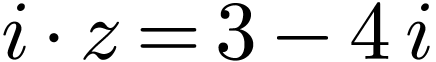
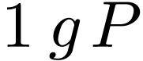
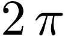
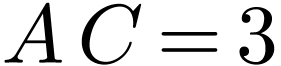

已知全集，集合 ，则
，则
| A. | B. | C. | D. |
若复数满足，则
| A. 1 | B. 5 | C. 7 | D. 25 |
若直线 是圆的一条对称轴，则
是圆的一条对称轴，则
A.  |
B.  |
C. 1 | D.  |
己知函数,则对任意实数 ，有
，有
| A. | B. |
C.  |
D. |
己知函数 ，则
，则
A.  在上单调递增
在上单调递增
B. 在上单调递增
C. 在上单调递减
D. 在上单调递增
设 是公差不为0的无穷等差数列，则“为递增数列”是“存在正整数，当时，
是公差不为0的无穷等差数列，则“为递增数列”是“存在正整数，当时， ”的
”的
| A. 充分而不必要条件 | B. 必要而不充分条件 |
| C. 充分必要条件 | D. 既不充分也不必要条件 |
在北京冬奥会上，国家速滑馆“冰丝带”使用高效环保的二氧化碳跨临界直冷制冰技术，为实现绿色冬奥作出了贡献，如图描述了一定条件下二氧化碳所处的状态与和的关系，其中表示温度，单位是； 表示压强，单位是bar，下列结论中正确的是
表示压强，单位是bar，下列结论中正确的是
A. 当，时，二氧化碳处于液态
B. 当，时，二氧化碳处于气态
C. 当，时，二氧化碳处于超临界状态
D. 当 ，时，二氧化碳处于超临界状态
，时，二氧化碳处于超临界状态
若，则
| A. 40 | B. 41 | C. | D. |
已知正三棱锥的六条棱长均为6， 是△及其内部的点构成的集合，设集合
是△及其内部的点构成的集合，设集合 ，则表示的区域的面积为
，则表示的区域的面积为
| A. | B.  |
C.  | D. |
在△中，，，．为△所在平面内的动点，且 ，则的取值范围是
，则的取值范围是
| A. | B. | C. | D. |

 的一个取值为
的一个取值为 项和
项和 ，满足
，满足 中，侧面
中，侧面 分别为
分别为 //平面
//平面 与平面
与平面 的数学期望
的数学期望 的方程：
的方程： 的直线与椭圆
的直线与椭圆 在点
在点 处的切线方程；
处的切线方程； ，讨论函数
，讨论函数 ，若对任意的
，若对任意的 中存在
中存在